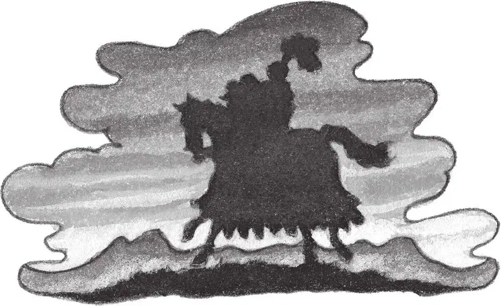

空气是温暖的。
天快亮了，远处有一条狗在叫。
“肯定是亨利在叫！”安妮说，“我们真的回家了。”
两人从树屋的窗口往外望。
“太好了，我们回家啦！”安妮说。
“刚才真悬啊。”杰克说。
远远地，路灯照亮了他们住的那条街。他们家楼上的窗户里有灯光。
“糟了，”安妮说，“爸爸妈妈好像已经起床了。快回去吧！”
“等一等。”恍惚中，杰克拉开书包拉链，掏出了那本骑士和城堡书。
书潮得很厉害，杰克把它放回原处，跟其他的书摆在一起。
“快下去吧！”安妮说着就往树屋外爬。
杰克跟在她后面下了绳梯。
他们穿过灰黑色的树林，顺着那条空荡的街道往家跑。
他们跑进自家的院子，悄悄走过草坪。
然后，他们小心地拉开家门，迅速溜了进去。
“爸爸妈妈还没有下楼呢。”安妮压低声音说。
“嘘。”杰克做了个手势。
他在前面走上楼梯，穿过走廊。
还是没有看见爸爸妈妈的身影，但是能听见卫生间里有流水声。
他们的家多么安全、舒适和温馨，跟那座漆黑、冰冷的城堡太不一样了。
安妮在她的卧室门口停住脚步。她朝杰克微微一笑，然后走进了自己的房间。
杰克也匆匆走进自己的房间。他脱掉湿乎乎的衣服，换上了干爽而柔软的睡衣。
他在床上坐下，拉开书包，掏出了那个被浸湿的笔记本。他又摸了摸铅笔，但手却碰到了另一样东西。
原来是那枚蓝色的皮书签！它肯定是从骑士和城堡书里掉出来的。
杰克举着书签凑近台灯，仔细端详。书签的皮质光滑而陈旧，看上去有些年头了。
杰克这才注意到书签上有一个字母，是一个漂亮的M。
他连忙打开床边的抽屉，取出那枚金勋章。
勋章上的字母M和这个一模一样。
突然，杰克意识到了一个惊人的事实。
他深深吸了口气。
一个谜团解开了。
在恐龙时代丢失了这枚金勋章的人，就是拥有树屋里所有书籍的那个人。
但是，那个人会是谁呢？
杰克把书签放在勋章旁边，关上了抽屉。
他拿起铅笔，把笔记本翻到最不潮湿的那一页，开始记录这个新发现：
还没等他画出那个字母M，他的眼皮就合上了。
他梦见自己和安妮又跟那名骑士在一起了。三个人骑着那匹黑马，行走在凉爽而黑暗的夜晚。他们穿过城堡的外墙，翻过被月光映照的山丘，进入了那片迷雾。
